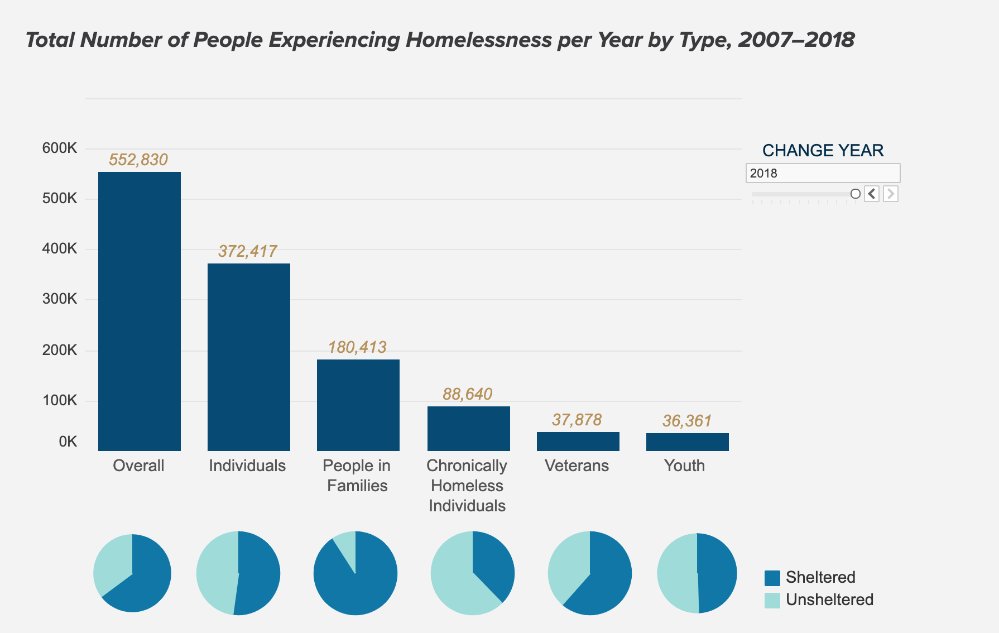

Homelessness
The US Interagency Council on Homelessness (USICH) set out to help the homeless people in our nation. USICH brought together nonprofits, advocates, and business leaders—in some cases, actors who had not collaborated before—as full partners. On the national level, L.A. Congresswoman Maxine Waters is sponsoring a bill that would boost federal spending on homelessness by $13 billion over the next ten years, according to the Congressional Budget office. The country’s targeted homelessness funding alone is never going to end homelessness. When agencies with mainstream programs, such as Medicaid, Supplemental Security Income, and Social Security Disability Insurance, help reduce barriers to benefits for people experiencing homelessness, they provide a critical boost toward the finish line.
The money funded by the government does not always result to a benefit for the homeless people. Although, with the help of health care and other companies, homelessness numbers can be decreased and start to benefit homeless shelters. Companies like Miracle Messages, HandUp, and ArtLifting are all examples of companies that are already making a change in today’s world to benefit the homeless.